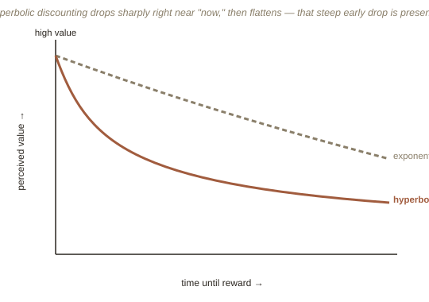

Chapter 4: Why "Future You" Gets Treated Like a Stranger
The first three chapters covered how people misjudge value (losses versus gains, mental accounting) and how they misjudge probability (heuristics, base rates). This chapter turns to a third dimension entirely: how people misjudge time — specifically, how much a future reward is worth compared to an identical reward available right now.
What "rational" time preference is supposed to look like
Classical economics models how people value the future using exponential discounting: the idea that people discount future rewards at a constant, steady rate — a dollar next year is worth slightly less than a dollar today, and a dollar in ten years is worth proportionally less again, by that same steady rate, no matter which specific year you're comparing. If that model were accurate, someone's preferences between any two future dates should stay consistent regardless of how far away both of them are.
Real preferences flip depending on when "now" is
Real behavior breaks this cleanly. Offer people $50 today or $100 in a year, and a large share choose the smaller, immediate $50. Offer the same people $50 in five years or $100 in six years — the exact same one-year gap, just both shifted further into the future — and most switch to happily waiting the extra year for the $100. Nothing about the actual math changed; only whether one option was available right now did. This pattern is called hyperbolic discounting, and the specific pull it describes — an outsized preference for immediate reward that fades once nothing is immediately available — is called present bias.

Why this explains procrastination better than "laziness" does
Present bias gives a much sharper account of everyday self-control failure than simply calling it laziness or weak willpower. The gym membership goes unused not because future-you doesn't value health — asked in the abstract, almost everyone says they do — but because in each individual moment, the immediate discomfort of going is weighed against a future benefit that present bias systematically undervalues, relative to how that same person will weigh it once it's no longer immediate. Economists sometimes model this as an ongoing negotiation between a long-term "planner" and a short-term "doer" sharing one body — the planner sets New Year's resolutions in December with total sincerity, and the doer, in the specific moment of choosing between the couch and the gym in March, keeps winning anyway.
A necessary caution: "willpower" research has its own replication problem
It's worth flagging directly, in the spirit of not overstating settled science: a related, once-famous idea called ego depletion (the theory that willpower is a single, limited resource that gets used up by any act of self-control, leaving less available for the next one) has run into serious trouble. Early studies seemed to show this clearly; a large, well-run multi-lab replication effort in 2016 largely failed to reproduce the effect. Present bias and hyperbolic discounting, by contrast, rest on far more consistently replicated evidence — the caution here is specifically about the "willpower is a depletable resource" framing, not about time-inconsistent preferences generally.
What present bias sets up, and what classical "just try harder" advice consistently fails to fix, is a structural problem: the version of you making a decision right now is reliably different, in predictable and measurable ways, from the version of you who will actually experience the consequences. That gap is exactly the kind of problem behavioral economics turns out to be good at designing solutions for — which is where the next chapter goes.
Try this
Ideas for noticing or testing this in your own life.
- Notice the switch point in your own choices: next time you're deciding between a smaller reward now and a larger one later, check whether your preference would flip if both options were pushed a month further into the future — a personal, informal test for present bias.
- Try pre-committing today for a "doer" you don't trust tomorrow: if there's something you keep intending to do but don't (saving, exercising, a hard task), try locking in a decision now that your future self can't easily undo — automating a transfer, prepaying a class — rather than relying on willpower in the moment.
Worth pulling on?
A few loose threads from this chapter — if any of these genuinely grab you, that's a good sign of where to go next.
- Hyperbolic discounting shows up in animals too — pigeons and rats tested on delayed food rewards show strikingly similar present-biased patterns, suggesting this isn't a uniquely human flaw in reasoning but something much older and more structural.
- The "pre-commitment" idea you just tried above is a real, formally studied tool in behavioral economics, not just a productivity trick. → Chapter 5 covers exactly how real institutions have deliberately built present bias into the solution itself, not just fought against it.